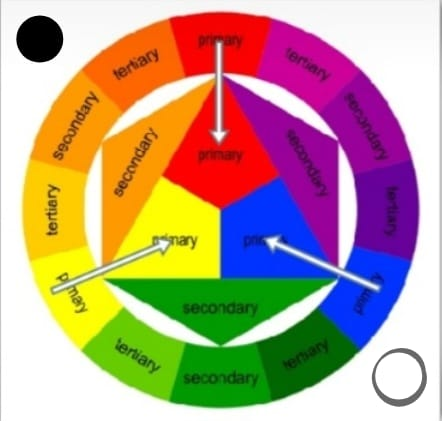
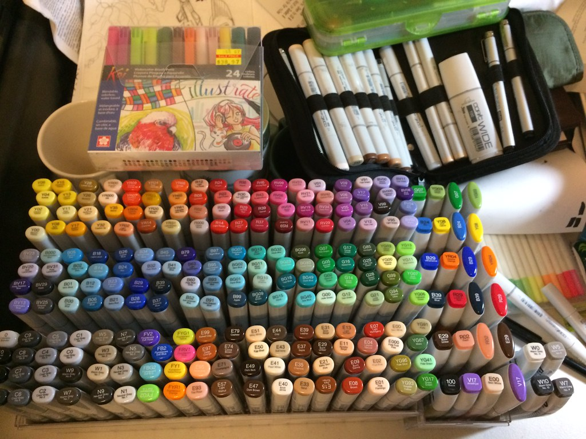

*רוב הטיפים הם איך לחסוך כסף ולא לקנות דברים מיותרים
.1. |
עדיף לקנות קמות מוגבלת של צבעים ולא לנסות לקנות כמות כמה שיותר גדולה של גונים וצבעים שונים . כמות מוגבלת שלצבעים תלמד אותכם איך להרבב נכון צבעים ולהגיעה לכול צבע שאתה רוצה . אפשר פשות לקנות את חמשת צבעי הבסיס ומהם לקבל כבר כול צבע וכול גוון הפשרי. צבעי הבסיס הם כחול ,אדום,זהוב ,שחור,ולבן (מכחול,אדום ,וצהוב אפשר לקבל כול צבע ומהוספה שחור,ולבן אפשר לקבל כול גוון של הצבע הזה וכך יש לכם את כול אפשרויות הצבע בעולם!) |
 |
.2. |
לא צריח לקנות את כול החומרים הכי יקרים ואת כול הסטים הכי גדולים רק אחרי שהיתנסתם ובדקתם מה התם אוהבים לצייר ואילו חומרים הכי מתאימים לכם רק אז אולי וגם אז הדיף לקנות רק אחד ולא את כול החבילה (בסופו של דבר יתספ לכם הרבה חומרים יצירה בבית) |
 |
.3. |
לא צריח ישר ללכת לחנויות ציור אפשר להתחיל בחנויות בית ספר (החנויות עם כול הדברים לבית ספר) שהם אפשר לקנות את הגירסה הזולה של הכול ולהיתנסות מבלי לעוציא סכומים גדולים. בנוסף אני ממליצה את חנות SHINE באה אפשר לקנות חוץ מבגדים דברים (מקחולים ,משתח עירבוב וכ"ו)לציור במחירים זולים מעוד ויש להם משלוחים . |
|
.4. |
יש אתר יוטיוב של בן אדם שמבין יותר ממני בכול התכומים סרטונים קצרים ומענינים אשר ממש עזרו לי ויכולים כך גם לכם (הכול באנגלית) |
|
.5. |
לא לצייר בבגדים שאוהבים. ובמיוחד אם מציירים באקריל לא ירד |
עד כמה אהבתה את העמוד?
אהבתי לא אהבתי